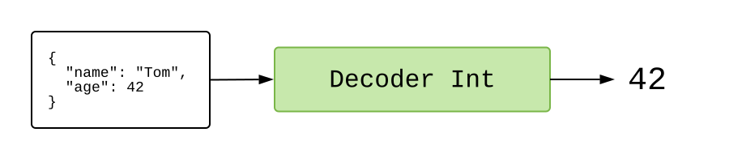

JSON
Recién vimos un ejemplo que usa HTTP para obtener el contenido de un libro. Muy útil, pero muchos servidores retornan datos en un formato especial llamado JSON.
Nuestro siguiente ejemplo demuestra cómo recuperar datos JSON, permitiéndonos apretar un botón para ver citas al azar desde una selección variada de libros. Apreta el botón azul “Editar” para echarle una mirada al programa. ¿Tal vez ya leíste algunos de esos libros? Apreta el botón azul.
import Browser
import Html exposing (..)
import Html.Attributes exposing (style)
import Html.Events exposing (..)
import Http
import Json.Decode exposing (Decoder, field, int, map4, string)
-- MAIN
main =
Browser.element
{ init = init
, update = update
, subscriptions = subscriptions
, view = view
}
-- MODEL
type Model
= Failure
| Loading
| Success Quote
type alias Quote =
{ quote : String
, source : String
, author : String
, year : Int
}
init : () -> ( Model, Cmd Msg )
init _ =
( Loading, getRandomQuote )
-- UPDATE
type Msg
= MorePlease
| GotQuote (Result Http.Error Quote)
update : Msg -> Model -> ( Model, Cmd Msg )
update msg model =
case msg of
MorePlease ->
( Loading, getRandomQuote )
GotQuote result ->
case result of
Ok quote ->
( Success quote, Cmd.none )
Err _ ->
( Failure, Cmd.none )
-- SUBSCRIPTIONS
subscriptions : Model -> Sub Msg
subscriptions model =
Sub.none
-- VIEW
view : Model -> Html Msg
view model =
div []
[ h2 [] [ text "Random Quotes" ]
, viewQuote model
]
viewQuote : Model -> Html Msg
viewQuote model =
case model of
Failure ->
div []
[ text "I could not load a random quote for some reason. "
, button [ onClick MorePlease ] [ text "Try Again!" ]
]
Loading ->
text "Loading..."
Success quote ->
div []
[ button [ onClick MorePlease, style "display" "block" ] [ text "More Please!" ]
, blockquote [] [ text quote.quote ]
, p [ style "text-align" "right" ]
[ text "— "
, cite [] [ text quote.source ]
, text (" by " ++ quote.author ++ " (" ++ String.fromInt quote.year ++ ")")
]
]
-- HTTP
getRandomQuote : Cmd Msg
getRandomQuote =
Http.get
{ url = "https://elm-lang.org/api/random-quotes"
, expect = Http.expectJson GotQuote quoteDecoder
}
quoteDecoder : Decoder Quote
quoteDecoder =
map4 Quote
(field "quote" string)
(field "source" string)
(field "author" string)
(field "year" int)
Este ejemplo se parece mucho al anterior:
initinicializa con el estadoLoading, junto con un comando que recupera una cita al azar.updatemaneja el mensajeGotQuoterecibido cuando una nueva cita está disponible. Sea lo que sea que ocurra, no tenemos nuevos comandos. También maneja el mensajeMorePleasecuando alguien apreta el botón, y la respuesta es enviar un comando para obtener más citas.viewmuestra las citas.
La principal diferencia está en la definición de getRandomQuote. En vez de usar Http.expectString, lo hemos cambiado a Http.expectJson. ¿Qué significa esto?
JSON
Si le pides a /api/random-quotes una cita aleatoria, el servidor produce un poco de JSON que se parece a esto:
{
"quote": "December used to be a month but it is now a year",
"source": "Letters from a Stoic",
"author": "Seneca",
"year": 54
}
No tenemos garantías sobre ninguna de esta información. El servidor podría cambiar el nombre de los campos, y los campos podrían tener datos de distinto tipo en distintas situaciones. El mundo es así, caótico.
En JavaScript, lo normal es convertir ese JSON en objetos nativos de JavaScript, y cruzar los dedos para que todo salga bien. Pero si tecleaste mal el nombre de un campo, o vienen datos inesperados, tu código va a lanzar una excepción. ¿El código estaba mal, o tal vez los datos estaban mal…? No podemos saberlo sin empezar a investigar.
En Elm, validamos el JSON antes de que entre a nuestro programa. Si los datos vienen con una estructura que no era la que esperábamos, inmediatamente los abemos. No hay ninguna forma de que datos incorrectos se cuelen entre las rendijas y causen una excepción en tiempo de ejecución tres archivos más allá. Este es el propósito de los decodificadores de JSON.
Decodificadores de JSON
Digamos que tenemos este JSON:
{
"name": "Tom",
"age": 42
}
Tendremos que pasarlo por un Decoder para acceder información específica contenida ahí. Si queremos obtener el campo "age", pasamos el JSON por un Decoder Int que describe exactamente cómo acceder a esa información.

Si todo sale bien, del otro lado obtendremos un valor Int. Y si quisiéramos el campo "name", tendríamos que pasar el JSON por un decodificador Decoder String que describe exactamente cómo recuperarlo:

Y nuevamente, si todo sale bien, del otro lado obtendremos un valor String.
¿Cómo creamos decodificadores como estos?
Elementos básicos
El paquete elm/json nos ofrece el módulo Json.Decode. Está lleno de pequeños decodificadores diseñados para usarse en conjunto.
Para obtener el campo "age" de { "name": "Tom", "age": 42 }, necesitamos crear un decodificador como este:
import Json.Decode exposing (Decoder, field, int)
ageDecoder : Decoder Int
ageDecoder =
field "age" int
-- int : Decoder Int
-- field : String -> Decoder a -> Decoder a
La función field recibe dos argumentos:
String— nombre de un campo. Aquí, requerimos un objeto con un campo"age".Decoder a— un decodificador para el valor. Si el campo"age"existe, tratamos de pasar su valor por este decodificador.
Juntándolo todo, field "age" int dice que necesitamos un campo "age", y si existe, lo pasamos por el decodificador Decoder Int para recuperar un número entero.
Hacemos casi lo mismo para extraer el campo "name":
import Json.Decode exposing (Decoder, field, string)
nameDecoder : Decoder String
nameDecoder =
field "name" string
-- string : Decoder String
En este caso, necesitamos un campo "name", y si existe, queremos que su valor sea String.
Combinando decodificadores
¿Y qué pasa si necesitamos decodificar dos campos? Podemos conjugar decodificadores con map2:
map2 : (a -> b -> value) -> Decoder a -> Decoder b -> Decoder value
Esta función recibe dos decodificadores, pasa el JSON por ambos, y combina sus resultados. Con ella podemos juntar dos decodificadores así:
import Json.Decode exposing (Decoder, map2, field, string, int)
type alias Person =
{ name : String
, age : Int
}
personDecoder : Decoder Person
personDecoder =
map2 Person
(field "name" string)
(field "age" int)
Si usáramos personDecoder en { "name": "Tom", "age": 42 }, recuperaríamos un valor Elm como Person "Tom" 42.
Y para entrar en el espíritu de los decodificadores como piezas combinables, definiríamos personDecoder como map2 Person nameDecoder ageDecoder usando nuestros decodificadores definidos anteriormente. O sea, la gracia está en armar decodificadores más grandes a partir de otros más pequeños.
Anidar decodificadores
Muchos datos JSON no son tan planos. Imagina si existiera /api/random-quotes/v2, que trae información más completa sobre los autores:
{
"quote": "December used to be a month but it is now a year",
"source": "Letters from a Stoic",
"author": {
"name": "Seneca",
"age": 68,
"origin": "Cordoba"
},
"year": 54
}
Podemos manejar esta nueva situación anidando nuestros pequeños decodificadores:
import Json.Decode exposing (Decoder, field, int, map2, map4, string)
type alias Quote =
{ quote : String
, source : String
, author : Person
, year : Int
}
quoteDecoder : Decoder Quote
quoteDecoder =
map4 Quote
(field "quote" string)
(field "source" string)
(field "author" personDecoder)
(field "year" int)
type alias Person =
{ name : String
, age : Int
}
personDecoder : Decoder Person
personDecoder =
map2 Person
(field "name" string)
(field "age" int)
Fíjate en que no nos hemos molestado en decodificar el campo "origin" del autor. Un decodificador bien puede ignorar campos, lo cual es útil si sólo necesitamos extraer información parcial desde valores JSON relativamente grandes.
Siguientes pasos
Hay muchas funciones importantes en Json.Decode que no hemos cubierto aquí:
bool:Decoder Boollist:Decoder a -> Decoder (List a)dict:Decoder a -> Decoder (Dict String a)oneOf:List (Decoder a) -> Decoder a
Existen formas de extraer todo tipo de estructuras de datos. La función oneOf es particularmente útil cuando tenemos datos JSON poco normalizados. Por ejemplo, si a veces trae un Int y otras veces trae dígitos en formato String… Puede llegar a ser muy molesto.
Vimos cómo se usan map2 y map4 para lidiar con objetos con muchos campos. Pero cuando empieces a trabajar con objetos JSON más y más grandes, vale la pena revisar NoRedInk/elm-json-decode-pipeline. Sus tipos son un poco más complicados, pero mucha gente encuentra sus funciones más fáciles de leer y de usar.
Dato curioso: He oído varias historias de gente que encuentra bugs en su código de servidor después de migrar de JS a Elm, porque los decodificadores que escriben acaban siendo una etapa de validación que identifica errores extraños en los valores JSON. Por ejemplo, cuando NoRedInk migró de usar React a usar Elm, salieron a la luz algunos bugs en su código Ruby.